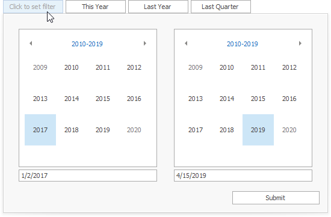
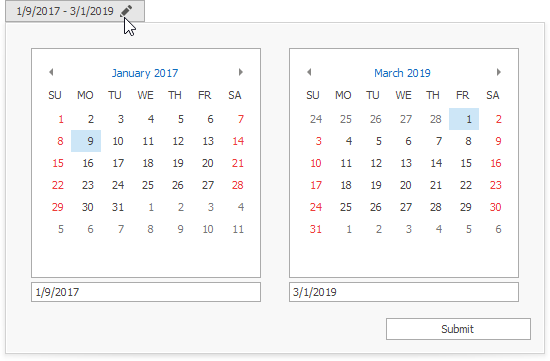
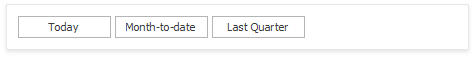

Date Filter
The Date Filter dashboard item allows you to filter dashboard data based on the selected data range. The range can be relative (Last 3 Months), use fixed dates (01-01-2018), or presets (Month-to-date). You can also filter dates before or after a specified date.
The DateFilter item displays a set of intervals that can be used as quick filters. The predefined intervals are also available in the context menu.

You can click the button to invoke the Date Picker:

Date Picker

The DateFilter item contains a Date Picker - a button with a drop-down calendar. This button initially displays "Click to set filter".
The calendar drops down when you:
- click the button without a specified range (the button with the "Click to set filter" caption)
- click the
 icon on the button with the specified datetime range.
icon on the button with the specified datetime range.
A drop-down calendar may contain a single calendar control (the Filter Type is Exact, Before or After, one calendar ele, ) or two calendar controls (the Filter Type is Between).
When you select the date, the Date Picker caption displays information about that date (date range) and an icon. The caption text is constructed from a custom string with date placeholders. If you click the caption, The Date Picker button acts as a checked button to apply the date range (checked) or reset the date filter (unchecked) to its default value. When you the icon, the drop-down calendar appears and enables the user to select another date range.
Quick Filters
Quick Filters are buttons displayed within the DateFilter item. Each button has a DateTime range assigned to it. You can click the button to apply that range as a Date filter. The button is checked until you click the same button once more to reset the filter to its default value. The buttom becomes unchecked if you click another button.

Arrange Quick Filters
Quick filters in the DateFilter item can be arranged horizontally or vertically. The default mode is auto height, in which quick filters are displayed horizontally and the dashboard item shrinks automatically to fit the items and save space.
Auto Height Arrangement Mode:
Vertical Arrangement Mode:

Horizontal Arrangement Mode: